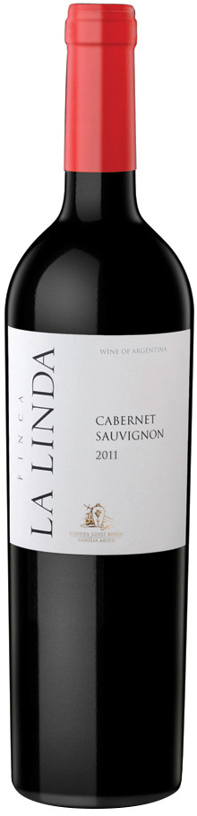

Винный магазин Геофизика
Cabernet Sauvignon Finca La Linda, 2011
Описание вина
|

|
|
Год:
|
2011
|
|
Страна происхождения:
|
Аргентина, Мендоса, Барранкас
|
|
Тип вина:
|
Красное сухое
|
|
Цена за бутылку:
|
987 рублей
|
Подробное описание товара
Виноград для производства вина Cabernet Sauvignon Finca "La Linda" выращивают в исключительно благоприятных условиях, по соседству с Андами. Виноградник расположен в Лухан де Куйо на высоте 780 метров над уровнем моря. Средний возраст лоз составляет 30 лет. В хозяйстве проводились многолетние эксперименты по культивации виноградных лоз, что наряду с бережным уходом, тщательной сортировкой и отбором урожая удачно влияет на созревание плодов. Собранный виноград направляется на ферментацию в стальных емкостях при контролируемой температуре около 28°С. Затем вино на протяжении 3-х месяцев выдерживается в бочках из американского и французского дуба. Перед розливом проводится легкая фильтрация. Потенциал хранения вина составляет 5 лет.
Винодельческое хозяйство Luigi Bosca с более чем столетней историей, богатыми традициями, опытом и глубокими знаниями ценностей региона считается одним из старейших в Mendoza. Леонсио Арису приехал в Мендосу в 1890 году, где начал работать в компании своего дяди, который занимался продажей вин. В 1901 году появился первый виноградник семьи. С 1908 года Леонсио начал управлять семейным хозяйством. Очень интересным является тот факт, что винодельня получила свое название в честь семейного друга и винодела, Луиджи Боска, а не в честь самого Леонсио Арису. Все дело в том, что брат Леонсио в то время уже основал другой бизнес, которому дал свое имя, а фамилия его матери — Феррари не подходила, потому что уже существовали известные во всем мире автомобили Феррари, а также итальянское винодельческое хозяйство с точно таким же названием. Но, несмотря на это, сын Леонсио, Сатурнино Арису, позже придумал девиз, который гласил: "наше вино такое же уникальное, как Ferrari". Но эта философия не была полностью воплощена в жизнь, так как Арису никогда не прибавляли к стоимости своих великолепных вин столь же внушительную наценку за бренд. Также как итальянские инженеры и конструкторы совершенствуют свои машины, нынешний директор компании Luigi Bosca, Альберто Арису, считает, что только движение вперед делает винодельню поистине великой. Одним из главных достоинств компании является умение сочетать традиции и новации.
С виноградников хозяйства Луиджи Боска открывается чудесный вид на Анды, соседство с которыми создает превосходный микроклимат для выращивания винограда. Эксперты полагают, что много миллионов лет назад эта земля была дном океана, благодаря чему в почвах преобладает глина, тектиты и галька. Произрастающий здесь виноград великолепно отражает особенности терруара, в процессе созревания ягод проводятся исследования и тесты для определения оптимальной зрелости. Сбор винограда осуществляется вручную. Во время выдержки вина в дубовых бочках проверка уровня и долив производятся два раза в неделю, а для высвобождения углекислого газа, который поступает в молодое вино, перед закрытием бочек их аккуратно простукивают при помощи деревянного молоточка. Одним словом, на винодельне делается все для того, чтобы защитить, сохранить и выразить характер восхитительного винограда.
© Все права защищены. Минздрав предупреждал уже много раз! Хватит пить! Идите учиться уже...